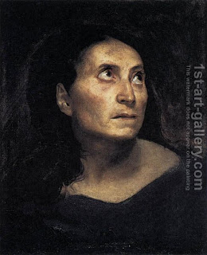

Bava Kamma 87 - One Who is Obligated and Does Observe the Laws

According to Rabbi Yehudah, a blind person is exempt from the laws of exile for inadvertent murder because of "... without seeing ...", from all monetary laws because of "... according to these laws ..." and from all the laws of the Torah because of "... these are the ... the laws ..."
Said Rav Yosef (who was blind but observed all the commandments) "I am glad that the law is not like Rabbi Yehudah, because one who is obligated and does is greater."
Regarding a deaf person, a deranged person and a minor, one who wounds them is liable, but they, if they wounded someone, are not liable.
Art: A Mad Woman by Eugene Delacroix